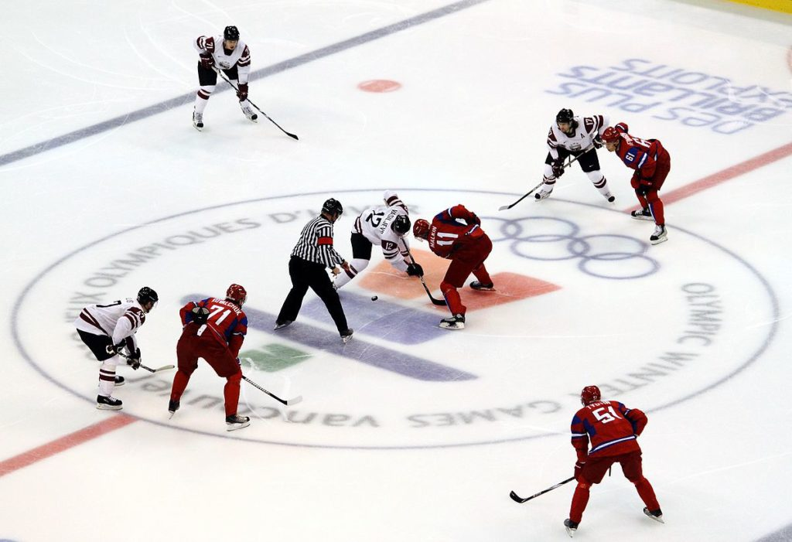

Esportes na neve
Esportes na Neve Os esportes na neve englobam uma variedade de atividades emocionantes e desafiadoras que são realizadas em ambientes frios e cobertos de neve. Entre os mais populares estão o esqui e o snowboard, ambos oferecendo uma combinação única de aventura, técnica e beleza natural. Esqui: Existem várias modalidades de esqui, incluindo esqui alpino, esqui cross-country e esqui freestyle. O esqui alpino é conhecido pelas descidas rápidas e curvas acentuadas, enquanto o esqui cross-country se concentra na resistência e na exploração de longas distâncias. O esqui freestyle inclui manobras acrobáticas e saltos, exigindo grande habilidade e criatividade. Snowboard: Similar ao esqui, mas usando uma única prancha, o snowboard também possui várias modalidades, como o snowboard alpino, freestyle e boardercross. Cada modalidade oferece desafios únicos e permite que os praticantes explorem diferentes aspectos do esporte, desde a velocidade até a execução de truques. Além dos benefícios físicos, como fortalecimento muscular, melhora da coordenação e aumento da resistência, os esportes na neve proporcionam uma conexão única com a natureza e uma sensação de liberdade ao deslizar pelas paisagens cobertas de neve.